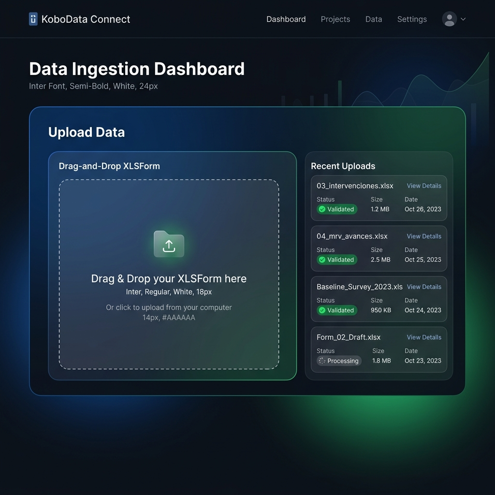
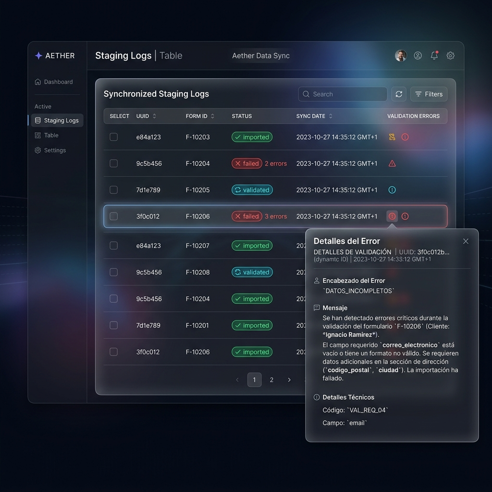
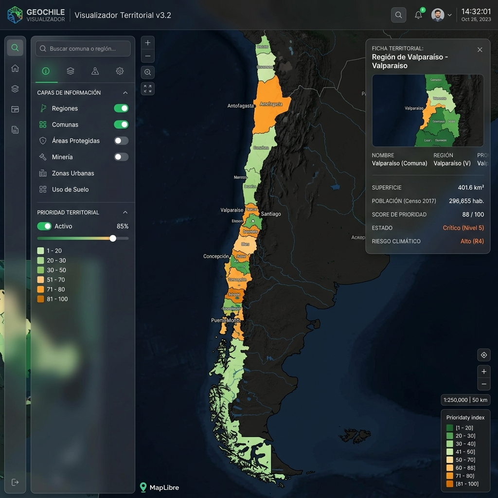
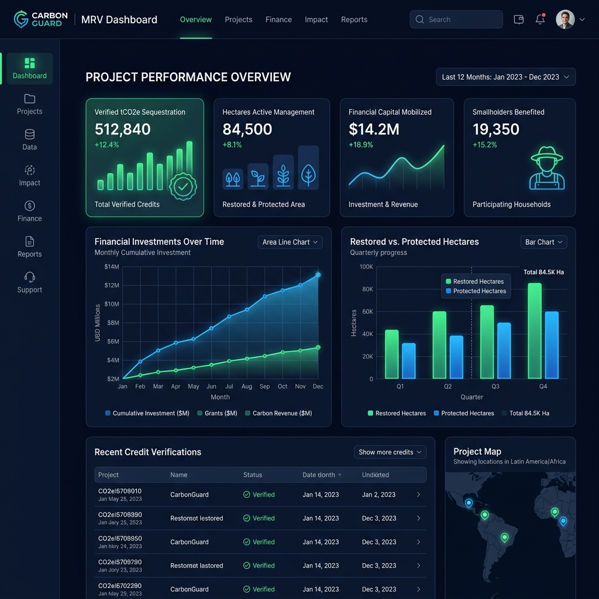

Flujo de Carga, Procesamiento y Visualización de Información
Guía técnica detallada paso a paso para comprender el ciclo completo de la información en el Sistema de Información Geográfica y Monitoreo, Reporte y Verificación (MRV).
Mapa General del Flujo de Datos
El sistema opera en un ciclo cerrado que procesa datos desde la captura en terreno hasta los dashboards gerenciales.
Captura Operativa (XLSForms)
Recolección parametrizada con validaciones en caliente.
Bandeja Staging y Validación API
Recepción de Webhooks, logs e informes de consistencia.
Normalización e Ingesta GIS
Conversión de geometrías y cruces espaciales para el cálculo del índice.
01 Paso 1: Diseño e Ingesta de XLSForms
Los XLSForms parametrizan las encuestas operativas que serán enviadas por dispositivos móviles o webhooks de KoboToolbox.
- Estructura del Formulario: Parametrizada mediante 3 hojas de cálculo esenciales:
settings(metadatos de versión e IDs),survey(cuestiones, campos y reglas) ychoices(listados y dominios). - Tipos de datos: Captura de textos, decimales, enteros, fechas y geometrías en coordenadas geográficas.
- Nombres de variables normalizadas: El sistema lee nombres de columnas estandarizadas como
codigo_proyecto,superficie_haymonto_usdpara garantizar el mapeo correcto.

02 Paso 2: Recepción vía Webhook y Validación
La API de FastAPI expone el endpoint de sincronización que valida el JSON recibido contra la definición lógica del XLSForm correspondiente.
filename y ejecuta un análisis sintáctico (parsing) en caliente.
relevant) y condiciones matemáticas de rango (constraint).
03 Paso 3: Bandeja de Staging (Kobo Logs)
Antes de impactar las tablas reales de la base de datos, cada sincronización se registra en el área de staging del sistema.
- kobo_staging_records: Tabla intermedia que almacena el payload bruto en formato JSON y el listado de fallas de validación si existen.
- Seguimiento de Estado: Permite auditar el estado del registro:
pending: Recibido sin procesamiento.validated: Payload consistente que pasó las reglas.imported: Datos promocionados a tablas de producción.failed: Transacción abortada por inconsistencia.
- Diagnóstico de Errores: Expone el porqué falló el registro, indicando el campo (ej:
fecha_identificacion) y la regla rota.

04 Paso 4: Normalización y Promoción Base de Datos
Los registros válidos son transformados y promovidos automáticamente en una única transacción de base de datos relacional.
[Latitud, Longitud]. El backend las reordena y re-proyecta a [Longitud, Latitud] en proyección EPSG:4326.
Project y, si es exitoso, se inserta la entidad Investment asociada.
FIS-02, FIN-02, etc.).
05 Paso 5: Visualización de Capas en Geovisor
El visor del mapa interactivo renderiza dinámicamente los datos territoriales y ambientales consumiendo un pipeline optimizado.
- Streaming de Capas Pesadas: La API implementa
FileResponsepara transmitir archivos GeoJSON grandes de forma directa desde el disco (evitando congestión de memoria RAM en el servidor). - Lazy-Loading (Carga Perezosa): El visor de MapLibre GL carga inicialmente solo las comunas y regiones. Capas pesadas (parques, concesiones, ecosistemas) se descargan de forma asíncrona solo al ser activadas por el usuario.
- Estilos Cartográficos Únicos: Los polígonos y líneas se pintan con colores específicos y rellenos de acuerdo al tipo de territorio (ej: áreas protegidas en verde esmeralda y minería en rojo).

06 Paso 6: Cuadro de Mando Ejecutivo (Dashboard)
Los datos consolidados son reflejados en tiempo real en la página principal para análisis de tomadores de decisión.
- Inversión Consolidada: Gráficos de barra y dona que desglosan montos financieros agregados por institución responsable, año y fuentes de financiamiento.
- Resultados Físicos y Ambientales: Indicadores de hectáreas totales estimadas versus verificadas bajo manejo, conservación y restauración ecológica.
- Alertas de Calidad de Datos: Tarjetas dinámicas que detectan brechas de información crítica en la base de datos (registros sin montos financieros o vacíos espaciales).

🧪 Verificación y Pruebas del Pipeline
Todo el flujo de ingesta y mapeo georreferenciado está cubierto por un set robusto de pruebas automatizadas locales que aseguran la fidelidad en la transformación de los datos.
Resumen del Estado Operativo:
- 9 XLSForms integrados y validados dinámicamente en staging.
- Conversión de coordenadas Kobo a GeoJSON
[lng, lat]EPSG:4326 funcional. - 10 capas GIS operativas con soporte de streaming asíncrono.
- 21 pruebas de integración locales en `pytest` pasando con 100% de éxito.